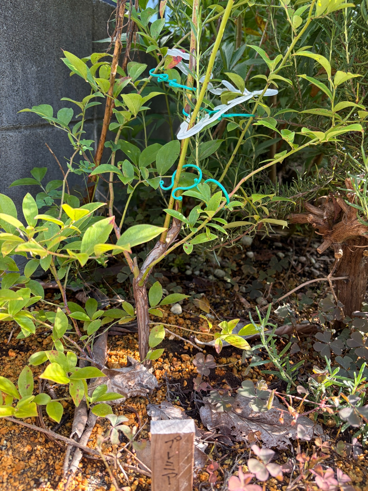

2026/09/22 緑の葉を残すプレミア。収穫後の葉色と、株元から伸びる枝の様子
9月5日の記録から17日がたちました。庭に地植えしたプレミアは、今回も緑色や黄緑色の葉を残しています。
葉を一枚ずつ眺めると、黄色みを帯びたものや、縁や葉先に赤みがあるものも見られます。赤褐色の細かな斑点がある葉もあり、株全体が同じ色や状態にそろっているわけではありません。
今年はプレミア、クライマックス、メンデイトの3品種とも実をつけ、収穫したブルーベリーをヨーグルトに混ぜておいしくいただきました。初めての収穫を楽しんだ後は、実を採った株がどんな葉を残し、枝をどのように広げているのかにも目が向いています。
今回は、株元から立ち上がる幹と、そこから上や左右へ伸びる枝がよく見えます。葉の色だけでなく、枝のつながりも眺めながら、9月下旬のプレミアの姿を残しておきます。
9月5日から続く、収穫後のプレミア
前回の9月5日には、初めての収穫を楽しめたことと、夏を過ごした枝葉の様子を記録しました。緑色や黄緑色の葉があり、下の方には黄色みのある葉や赤褐色の部分も見られました。
今回も、緑を残した葉の間に、黄色みや赤みのある葉が混じっています。葉色の違いを引き続き見ることができ、収穫が終わった後も、株の姿は少しずつ眺め続けたいと感じます。
ただ、前回とは撮影した角度や枝の重なり方が違います。同じ葉をすべて追えているわけではないので、この17日間で黄色い葉がどれだけ増えたのか、斑点が広がったのかまでは分かりません。
今回は、今見えている葉の色と枝ぶりを、9月22日の状態として残しておきます。前回の姿を思い浮かべながらも、違って見えるところをすぐに生長や傷みの進行と決めつけずに見ていきたいです。
緑色や黄緑色の葉が、枝の各所に残っています
プレミアには、緑色や黄緑色の葉がついています。中央付近には比較的大きな葉があり、左右へ伸びる枝にも、大きさの違う葉が並んでいます。
左側の枝には、先へ向かって葉が続くところがあります。右側にも細い枝が斜めに伸び、その途中や先端付近に葉がついています。
葉が近くに集まっている部分もあれば、葉と葉の間が空き、枝がよく見える部分もあります。そのため、葉のまとまりと細い枝の線が組み合わさった姿になっています。
緑の濃さにも違いがあります。奥では落ち着いた緑に見える葉があり、日が当たる手前では明るい黄緑色に見える葉が目立ちます。
同じ葉でも光の当たり方で印象が変わるので、明るく写っていることだけで黄色くなったとは考えず、株全体の中でどんな葉が残っているのかを眺めたいと思います。
黄色みのある葉や、赤みを帯びた葉も見られます
緑の葉の間には、黄色みの強い葉があります。特に下の方や手前の枝では、黄緑色から黄色に近く見える葉が目につきます。
一枚の葉の中にも色の違いがあります。緑色を残しながら葉先に赤みがあるものや、黄色い面に赤褐色の部分が混じるものが見られます。
株元に近い低い枝にも、小さな葉が残っています。その中には赤みのある葉もあり、上の葉だけを眺めていたときには気づきにくい色が、足元にもあります。
9月下旬になると秋への移り変わりを感じますが、この葉色をすべて季節の紅葉として受け止めてよいのかは、まだ分かりません。前回の9月5日にも黄色みや赤みはあったので、時期だけで判断せず、これからの変化も見ていきたいです。
今のプレミアは、株全体が赤く色づいた姿ではありません。緑や黄緑を残しながら、黄色や赤みが部分的に混じっている、その途中のような姿をしています。
赤褐色の斑点や、葉先の変色も残っています
一部の葉には、赤褐色や暗い色の小さな斑点があります。右側の細長い葉や下の方の葉では、点状の色の違いが見えるところがあります。
葉先や縁に赤みや褐色があるものもあり、すべての葉がきれいな緑にそろっているわけではありません。遠くから見たときの緑の印象と、近くで見た葉の状態には違いがあります。
収穫を楽しめたことはうれしいですが、実が採れたという結果だけで、その後の株の調子も問題ないと考えることはできません。果実を楽しんだ後の葉にも、気になるところはあります。
一方で、斑点や葉色だけから、暑さや乾燥、土の状態、病気などのどれか一つを原因として決めることもできません。今は、斑点のある葉と緑を残す葉の両方を、そのまま記録しておきます。
次に眺めるときには、葉色に加えて、斑点のある葉が残っているか、葉先の変色に違いがあるかも気にして見たいと思います。

株元から立ち上がる、褐色の幹がよく見えます
今回の写真では、株元から上へ伸びる褐色の幹が目に入ります。表面には縦方向の筋や色の違いがあり、ところどころに凹凸が見えます。
上の緑色の枝と比べると、株元側は色や表面の印象が違います。一本の株の中でも、幹の部分と細い枝では、見え方にずいぶん差があります。
中央の幹は途中で曲がりながら立ち上がり、その周囲から枝が分かれています。葉だけを見るのではなく、株元から枝先へと目を移すと、プレミアの形が分かりやすくなります。
表面の筋や凹凸も、今回の写真で見える特徴として残しておきたいところです。ただ、その見た目だけで幹の傷みや異常とは判断せず、枝葉の状態と合わせて見ていきます。
冬に地植えしたときから同じ場所で育ててきた株の、今の幹の姿です。これからも同じあたりを写せれば、株元の様子を続けて見ていけそうです。
褐色の幹から、緑色の枝へとつながっています
株元の褐色の部分をたどっていくと、上へ伸びる緑色や黄緑色の枝につながっています。右側へ斜めに伸びる枝や、左側へ広がる枝も見えます。
枝には、緑色の中に赤みや褐色が混じる部分があります。幹から枝先まで一様な色ではなく、場所によって色合いや太さが違います。
中央付近には上へ向かう枝があり、その周囲には細い枝がいくつも重なっています。横へ伸びる枝にも葉がつき、上方向だけでなく、左右にも株の広がりがあります。
前回の写真でも、上へ伸びる枝と左右へ広がる枝がありました。今回もその両方が見えますが、撮影する位置が変わると、枝の交差や分かれ方が違って見えます。
どの枝が何センチ伸びたのかまでは分かりません。それでも、株元から枝先へとつながる形を残しておくことで、葉が少なくなる時期や、また葉が広がる時期にも、今の姿を振り返れると思います。
同じ日のクライマックスとは、葉色の印象が違います
同じ日に眺めたクライマックスでは、下の枝の赤色や赤紫色の葉が目を引きました。一方、今回のプレミアは、緑色や黄緑色の葉が中心に見えています。
プレミアにも黄色みや赤みはありますが、写真から受ける印象は同じではありません。同じ日に購入し、同じ日に地植えした株でも、それぞれに違う姿があります。
こうして品種ごとに記録を残しておくと、収穫した実だけでなく、その後の葉色にも違いがあることに気づきます。庭で3品種を育てる楽しみの一つだと思います。
ただ、写真の向きや日当たり、写っている枝の範囲も違います。この見え方だけで、品種による紅葉の早さや、株の健康状態の差までは決められません。
今は「9月22日のわが家では、それぞれがこう見えた」という記録として残しておきたいです。これから季節が進んだときにも、一株ずつの変化を見ていければと思います。
株元の名札と、周囲の植物
手前には、「プレミア」と書いた木製の名札があります。地植えしたときに立てた名札が、今回も同じ株を見守る目印になっています。
名札の後ろには褐色の幹が立ち上がり、その周りには黄土色の粒が残るところと、色の濃い土が見えるところがあります。足元には枯れ葉や小さな植物もあります。
地面にある大きな枯れ葉は、プレミアの葉とは形が違います。落ち葉が見えるからといって、プレミアからたくさん葉が落ちたとは考えないようにします。
右側には、細い針状の葉をつけた周囲の植物が重なっています。プレミアの幅のある葉とは形が違いますが、枝が交差するところでは、株の輪郭が見分けにくい部分もあります。
周りの緑をすべてプレミアの葉として見るのではなく、幹や枝をたどりながら眺めると、この株の姿が少しずつ分かってきます。
地植えから約9か月。収穫の後も記録を続けます
昨年12月16日に地植えしてから、約9か月がたちました。
黒い育苗ポットに入った苗を迎え、庭に植え、今年は実を収穫して食べることができました。購入時にラベルの果実写真を眺めていたところから、自分の庭で育てた実を味わうところまでつながったことを、うれしく感じます。
果実の写真は残せませんでしたが、収穫したブルーベリーをヨーグルトに混ぜて楽しんだことは、今年の大切な出来事です。
その後のプレミアは、緑や黄緑の葉を残し、部分的に黄色みや赤み、斑点が見られる姿になっています。株元には褐色の幹があり、そこから緑色の枝が上や左右へ伸びています。
収穫が終わった後も、見るところはたくさんあります。葉の色、枝のつながり、幹の表面、足元の様子。季節ごとの姿を残しながら、この株の一年を少しずつ知っていきたいと思います。
2026年9月22日。初めての夏と収穫を経験したプレミアを、これからも庭の中で見守っていきます。